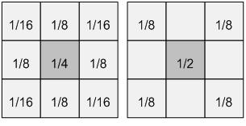
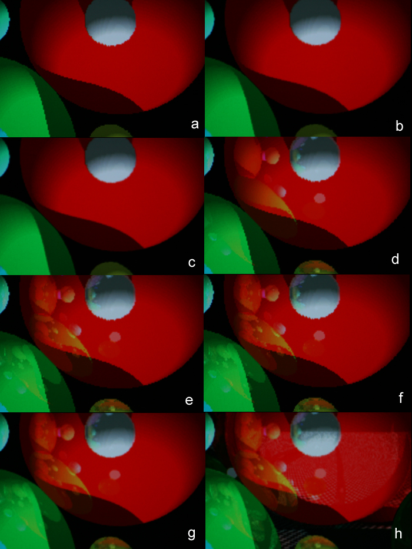
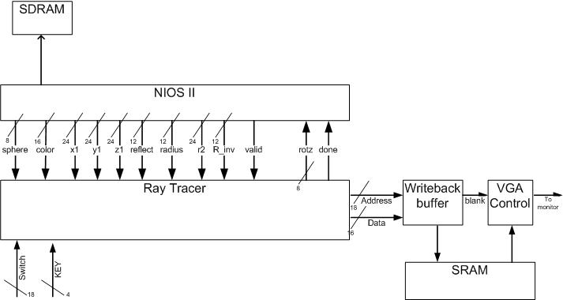

|
FPGA Ray Tracer |
Ray Tracer Hardware The ray tracing hardware consisted of a large state machine responsible for calculating the color of all the pixels. It wrote these results to a write buffer which coordinated with the VGA controller to access SRAM. The VGA controller read the screen values from SRAM and sent them to the VGA DAC along with the necessary clock and synch signals. The ray tracing hardware interfaced with the NIOSII CPU through the sphere table and one state in the state machine in which it read values from the CPU. All input switches and pushbuttons were used up to configure the hardware and move the origin/light source/screen position. State Machine If an initial ray does not intersect with any sphere, it would then be checked with the plane list. The same is true for a reflection ray. Shadow rays, however, do not consider planes for reasons stated earlier. Also, if a shadow ray intersects with any sphere closer than the light source, a shadow is cast on the origin of the shadow ray. Because we are concerned with the closest intersection, we still must check every sphere after an intersection is detected, so the closest distance and its intersection point are stored until all spheres have been checked. The alternative to checking every sphere is to sort the sphere list, thereby making the closest intersection the first one. However, this doesn't work for reflection rays which go through the same states as initial rays and so we check all spheres. Shadow ray's can stop once a single intersection has been found and so typically take less time. Also we impose the limitation that the light source itself does not cast shadows. Although the light source is a single point in space, we draw it as a small, "pure" white sphere to make it more convincing. The light source also does not reflect any light although it appears in the reflections on other spheres and planes. To create a reflection vector we must know the normal to the intersection point on the sphere. For planes, this is trivial as it is already stored in the plane table. The direction of the sphere normal is easy to get, however it takes many cycles to again normalize it. Once we have the normal and the direction of a shadow vector, we take the dot product and scale the color of the intersection accordingly. This creates realistic shadows that are brighter when the light vector coincides with the normal. We store the inverse of the radius in the sphere table to make normalization slightly faster by doing a multiply instead of divide. Once we have the normal, we have part of the reflection vector calculations done. At this point we need to check whether or not we want to launch a reflection, based on the number of reflections so far and the weight of the reflection. The weight of each object intersected with thus far is multiplied together so that less light reaches the eye from further intersections. If there is to be a reflection vector, the color produced from the previous ray is stored and any reflection color is added on top of that when the reflection ray completes. We check for saturation on any given color and so adding more of that color to the pixel does not help. This gives the realistic effect that you see reflections better on dark, shiny objects. Anti-alias sub-pixel rays are stored in a special buffer until all the rays for that pixel have been calculated, and then they are combined. Planes are checked in a similar way to spheres but
with more restrictions as discussed previously. These are for performance
reasons and the fact that we will only use planes as bounding mirrored
surfaces in our scenes. The closest plane intersection is calculated when
intersecting with planes as with spheres, but there are typically much
fewer planes than spheres in the scenes. Normalizing the normal is not
necessary as it has already been done (similar to the way radius parameters
are precalculated and stored in the sphere table). We can apply a checkerboard
pattern to planes by simply checking the intersection coordinates in two
axes and looking the value of a certain bit, depending on how wide you
want the checkers. We can also impose boundaries on how far planes extend
by disregarding hits that intersect outside of the bounds. Figure 8 Anti-Aliasing  Figure 9 (A left, B right) Jaggies appear in images rendered on a computer screen due to the finite pixilation/quantization used. No matter how much we increase the resolution, the jaggies will never disappear, only get smaller. The solution is to super-sample the image and average the color among adjacent rays. Our anti-aliasing implementation has the option to do either 8x or 4x anti-aliasing. For 8x anti-aliasing, nine rays are shot per pixel and the resulting color from each is summed using the weightings in figure 9-A. 4x anti-aliasing uses the weightings in figure 9-B. The colors of each sub-pixel were stored in an alias buffer until all sub-pixel colors had been determined. We used these weightings for several reasons: equal weightings blurred the image too much, Prof. Land suggested these weights and that they were more realistic, each is a fraction that can be resolved by shifts, and the sum of all the weights equals one. Each sub-pixel was +1/2, 0, or -1/2 from the center pixel in the X and Y directions. The effects of anti-aliasing are clear in figure 10. The top image (a) has no anti-aliasing or reflections. The next image (b) has 4x anti-aliasing, followed by 8x anti-aliasing (c), followed by 1 (d), 2 (e), and 3 (f) levels of reflections without anti-aliasing, followed by 3 levels of reflections and 8x anti-aliasing (g), and finally 3 levels of reflections, 8x anti-aliasing, and planes being rendered (h).  Figure 10 Write Buffer Square Root [2] VGA/SRAM The coordinates produced by the VGA controller were
used to access memory at the word level; we used the lower 9 bits from
each the X and Y coordinates to index SRAM. This limited our resolution
to 512 pixels wide but made indexing easy. We simply blacked the right
part of the screen when the X count exceeded 511 (0-511 visible) and disregarded
whatever data was being read from SRAM. If we didn't do this, the left
part of the screen was duplicated on the right side when the coordinates
rapped around (x > 511). Because SRAM holds 16 bit words, we used 1
bit to indicate a pixel was the light source, and 5 to represent each
the red, blue, and green content of a pixel. When read back from SRAM,
these RGB values were used as the upper 5 bits of the 10bit RGB lines
going to the DAC. If the pixel being drawn was part of the light source,
the lower bits were set high to allow us to produce "pure" white;
otherwise, they were left as 0 because they are mostly insignificant in
the overall color and not worth using another word in SRAM for which would
require prefetching values. Representing each color in 5 bits, however,
lead to some quantization of color, which is most clearly visible in the
Lambertian shading where there are small concentric rings of a shade of
the sphere color before jumping to the next slightly different shade,
rather than being a smooth gradient. Inputs
Table 1 Communication
between NIOS II and FPGA The following wires are used to interface between the C code running on the NIOS II processor and the hardware in FPGA. · Sphere[7:0](output) used to control the total number of spheres being drawn and the sphere number that is currently being drawn. The upper 4 bits are set by the software at initialization, which equals the number of spheres plus one light source. The lower 4 bits are set every time a new sphere is being sent to the FPGA. The state machine in the hardware uses the value of the lower 4 bits to set the index to the Spheres register. · Color[15:0] (output) specifies the color of a sphere. The lower 15 bits are allocated 5 bits each to color red, green and blue, while bit 16 represents whether if the sphere is a light source. This configuration gives a good balance between range of color and amount of memory needed to store the color information. · X1[23:0] (output) the x location of the current sphere. All locations are represented in fixed point format, with 12 bits each for integer and decimal portions. On the software side the location needs to be multiplied by 4096 (2^12) so that the hardware will get the correct value. · Y1[23:0] (output) the y location of the current sphere. · Z1[23:0] (output) the z location of the current sphere. · Reflect[11:0] (output) reflectivity of a sphere in a 12 bits integer. · Radius[11:0] (output) radius of a sphere in a 12 bits integer. This was originally designed to be 24 bits fixed point, which would make the radius squared value to be 48 bits, however the maxim width of PIO bus is only 32 bits. To simplify the interaction between NIOS II and the FPGA, only the integer portion of the radius is stored. The radius squared and inverse followed the same convention. · R2[23:0] (output) radius squared of a sphere in a 24 bit integer. By having the software calculate the radius square, it saves the hardware from doing it. If the radius stay constant, this value only needs to be calculated once in the init block in the software. · R_inv[11:0] (output) inverse of the radius of a sphere in 12 bit decimal point. This is also calculated in software for the same reason. It needs to be multiplied by 4096 (2^12) before sending to hardware for the correct value. · Valid (output) Every time all the wires are set for a particular sphere, the software will turn on the valid signal telling the hardware the data on the buses is valid to read. The valid bit will remain high until the next sphere on the list is ready to be sent. At that point the software will turn off valid bit and set the data. · Rotz[7:0] (input) sets the different mode for rotating all the spheres around the x, y, and z axis. This allows the hardware (DE2 board) to control how the scene is rotated around the origin, which gives the effect of rotating the camera view to show different scenes. · Done (input) done is asserted by the hardware at the beginning of state 1. State 1 is only entered either at reset or at the end of each frame. Only when done is high will the software sends out the sphere information one by one. As soon as the hardware gets all the updated sphere information it will move on to draw the frame. In the mean time the software will call motion and rotation functions to calculate the new locations of the spheres. This is the fastest way software can provide the sphere data to the hardware, allowing the state machine to spend the minimum amount of time in state 1.  Figure 11 Software
Overview The software running on the NIOS II has three main functions. It stores the list of spheres to the drawn on the screen. Each sphere in the list contains information such as its location, color, velocity, radius, and reflectivity. The original idea of implementing the NIOS II processor is simply to be able to store large number of spheres and polygons on the DRAM without writing a separate memory controller. Putting the scene object list on the DRAM frees up the SRAM for the VGA memory. However as we soon discovered that at the current speed and number of logic elements available on the DE2 board, implementing a large number of spheres is simply not realistic. The frame rate decreases drastically with sphere numbers passing 10. Instead of being used as a sophiscated DRAM controller the NIOS II processor is used to implement motion and camera rotation in the scene, which are the two other main functions of the software. SOPC
builder specs We used the highest level NIOS II/f CPU available to us to be able to send the sphere list as fast as possible. The CPU runs at 50Mhz, and has a 1KB instruction cache and 8KB data cache with a line size of 16 Bytes. The data cache is big enough to hold all our sphere data so the CPU doesn’t have to go to DRAM all the time. The CPU also has a floating point unit for the floating point calculations in the software. Logic elements were used for hardware multiply. The performance of this processor is up to 51 DMIPS. |